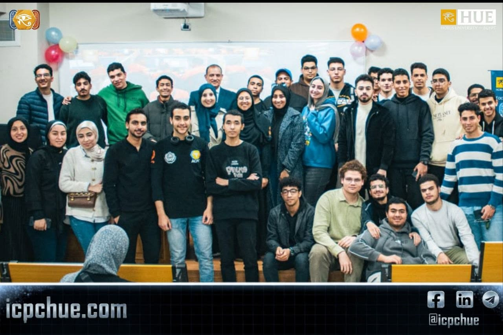
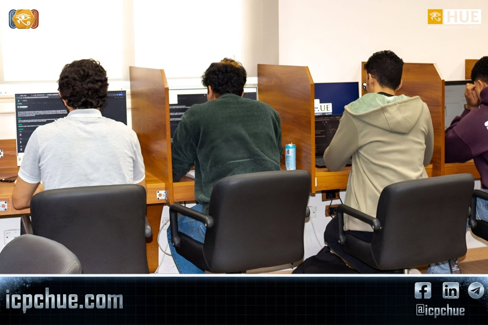
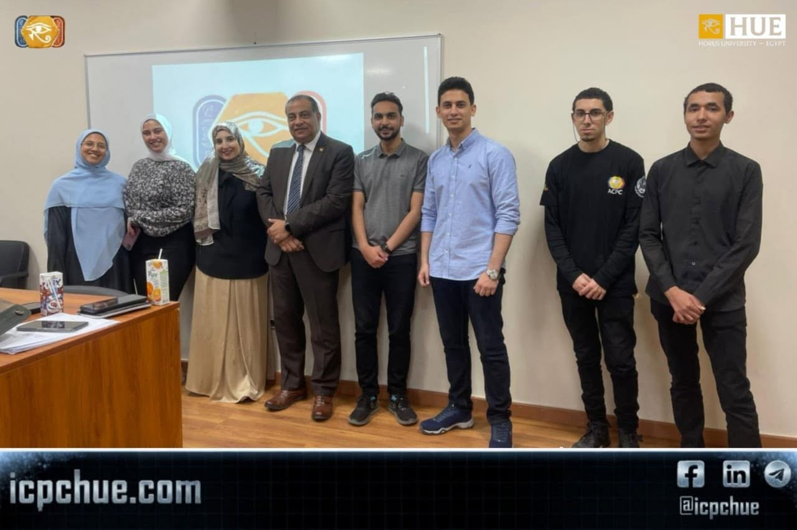

ICPC HUE Community
Horus University — Egypt
Horus University — Egypt
06 · On-Campus Events
Three offline milestones at Horus University that turned online training into a real community and ready teams.
Our first official offline event at the Faculty of AI. We explained what ICPC HUE is and how students use Codeforces and our platform, with stories and advice from ACPC DU champions:
Eng. Assem Gado · Eng. Hossam Hassan · Eng. Belal El-Babli · Eng. Omar Badr · Eng. Abdo Selim
Sponsored by Dr. Basma Mostafa and Dr. Yasser El-Awady, supervised by Eng. Fatma Magdy and Eng. Raafat Mohamed, and organized by the AXIS team. Community T-shirts and platform achievement stickers were handed out.


Two 3-hour contests open to all university students: individuals found teammates and existing teams tested their chemistry. The first was in Lab E425, the second in Hall A209.
| 1st place | Ibrahim Matar |
| 2nd place | Ahmed Waleed |
| 3rd place | Noha Kamal |
They were preceded by a live stream answering ECPC questions (4 Apr); official registration closed on 30 Apr.
Held at the Faculty of AI under the patronage of Prof. Dr. Ibrahim Saber, Chairman of the University Board of Trustees, with the support and guidance of Prof. Dr. Hossam El-Din Mostafa, Dean of the Faculty, and supervised by Dr. Basma Mostafa, Cybersecurity Program Coordinator, and Dr. Yasser El-Awady, Robotics and Intelligent Systems Program Coordinator.
6 teams of 3 students competed, supported by Eng. Anas Al-Harigi and Eng. Abdo Selim, ACPC Damietta coordinators.
